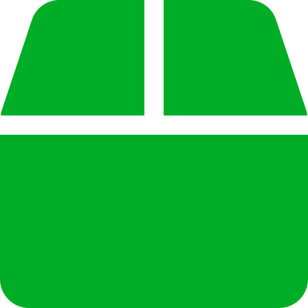
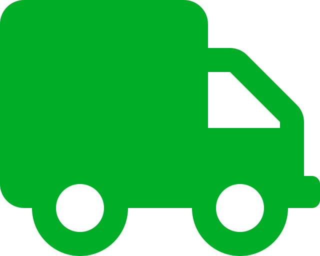
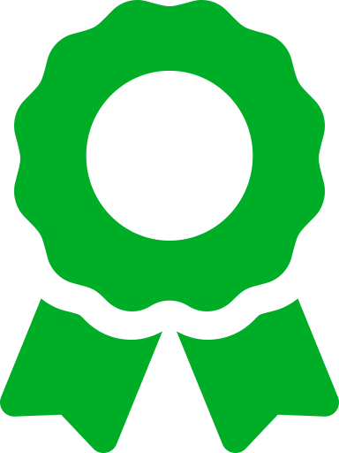

Conoce Cusco con nosotros ♡
-

Promociones
-

Transporte
-

Garantia
LUGARES TURISTICOS:
Cuzco es una ciudad de los Andes peruanos que fue la capital del Imperio Inca y
es conocida por sus restos arqueológicos y la arquitectura colonial española.
La Plaza de Armas es el centro de la ciudad antigua, con galerías, balcones
de madera tallada y ruinas de murallas incas. El convento de Santo Domingo,
de estilo barroco, se construyó sobre el Templo del Sol inca (Qoricancha)
y tiene restos arqueológicos de cantería inca.
◉La Plaza de Armas.
◉La Basílica de La Merced.
◉La piedra de los 12 ángulos.
◉El barrio de San Blas.
◉Las ruinas incas.
◉Subir hasta el mirador del Cristo Blanco.
COMIDAS CUSQUEÑAS:
Hablar de la cocina peruana es hablar de sus platos típicos, reconocidos por
su amplia variedad y su reconocimiento mundial. El turismo gastronómico en
Perú va de la mano con los premios obtenidos internacionalmente,
al contar con las comidas más deliciosas del mundo y Cusco no es la
excepción en esta variedad culinaria.
◉Trucha Frita: La tradicional de los ambientes campestres.
◉Chairo: ¿Con frío en Cusco? Un chairo para calentar
◉Sopa de Quinua: Un plato típico “ligth” para la altura.
◉Cuy al horno: El tradicional plato andino.
◉Chicharrón Cusqueño: El representante bandera del pueblo de Saya en Cusco.
DEPORTES EXTREMOS:
En Cusco (Perú) es posible practicar una gran variedad de deportes de aventura.
Algunos son ideales para la familia como las cabalgatas por el Valle Sagrado
de los Incas o la pesca en el río Vilcanota. Otros son realmente extremos como
el bungee jumping en Poroy o el Camino Inca a Machu Picchu de 4 días.
◉Pesca en el río Apurímac
◉Cabalgatas por el Valle Sagrado
◉Cuatrimoto en Maras y Moray
◉Bicicleta en el abra Málaga
◉Escalada de rocas cerca de Sacsayhuaman
◉Tirolesa (Zip line) en el Valle Sagrado
◉Cabalgatas por el Valle Sagrado
◉Canotaje en el río Vilcanota
◉Bungee Jumping en Cusco, Poroy
◉Parapente en el Valle Sagrado
◉Trekking a Machu Picchu